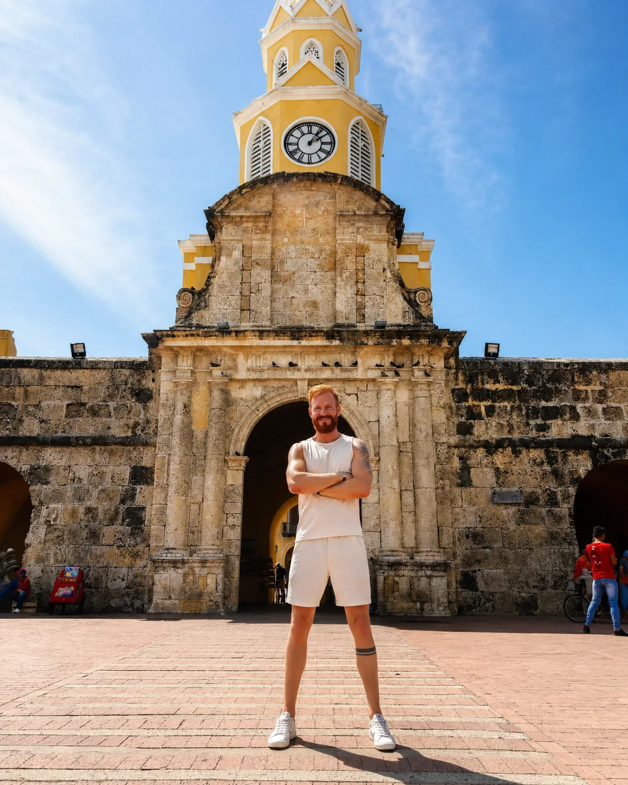
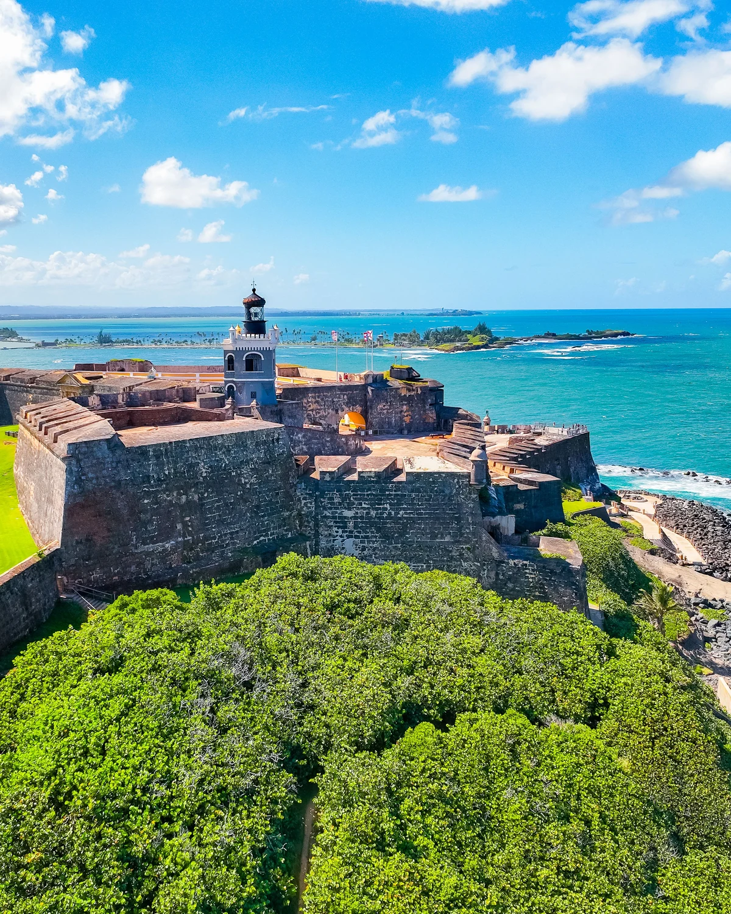
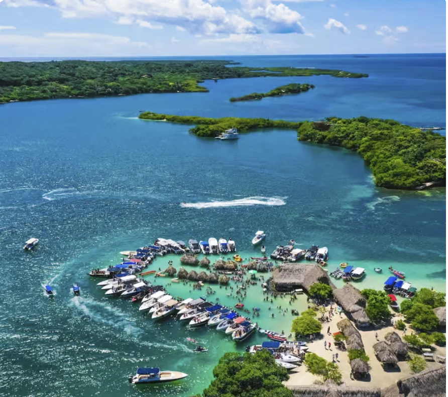
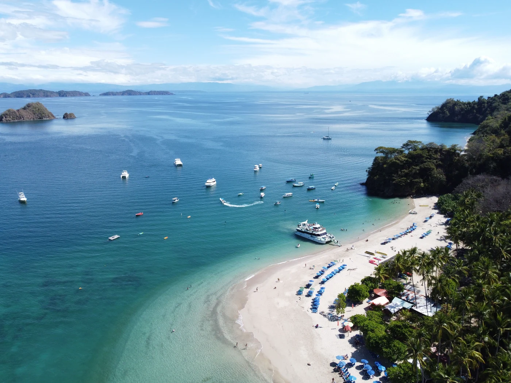
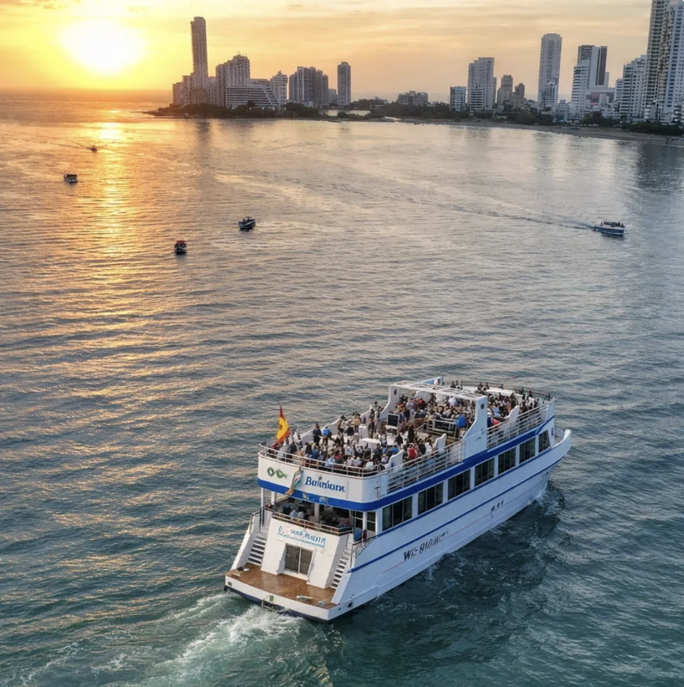
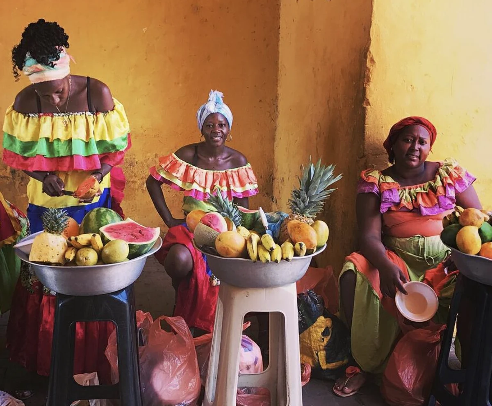

Historia + calle
Ciudad Amurallada + Getsemaní
Empieza por la arquitectura colonial y cruza a la energía de Getsemaní. Con guía, la caminata gana contexto más allá de las fachadas y los grafitis.
Haz clic aquíEn vez de acumular atracciones parecidas, elige experiencias que añadan una capa nueva al viaje.

Empieza por la arquitectura colonial y cruza a la energía de Getsemaní. Con guía, la caminata gana contexto más allá de las fachadas y los grafitis.
Haz clic aquí
La escala del castillo explica por qué Cartagena fue tan estratégica en el Caribe. Ve temprano para caminar con más comodidad.
Haz clic aquí
El gran cambio de escenario: agua transparente, navegación y casi un día entero fuera de la ciudad.
Haz clic aquí
Buena opción para arena blanca y agua caribeña. Compara el formato y el tiempo real de playa antes de reservar.
Haz clic aquí
Una experiencia corta que encaja después de un día liviano. La vista cambia cuando las murallas y Bocagrande empiezan a iluminarse.
Haz clic aquí
Un día dedicado a historia, herencia africana, música, lengua y tradiciones que revelan otra capa esencial de Colombia.
Haz clic aquíHistoria y vida de calle en un solo bloque.
Elige un gran día caribeño, no dos casi iguales.
La lectura militar y estratégica de Cartagena.
Reserva tiempo y atención para una experiencia más profunda.
Algunos enlaces pueden generar comisión para Lipe Travel Show sin cambiar el precio pagado por el viajero.